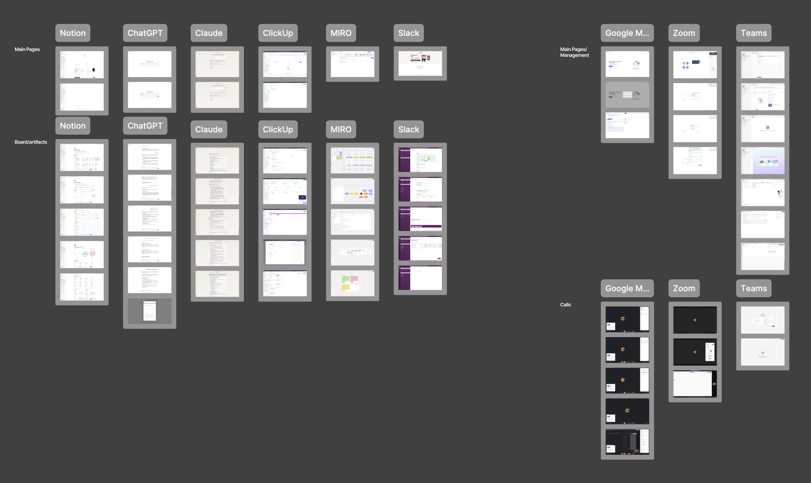
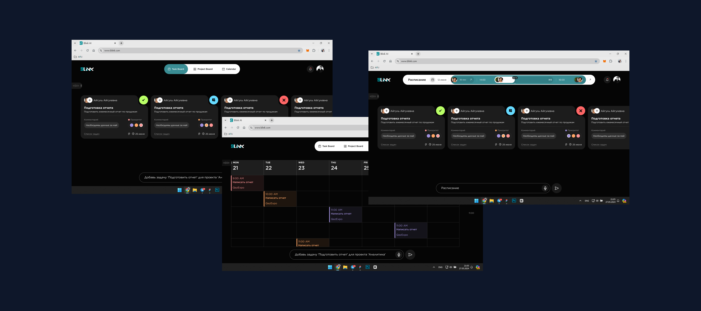
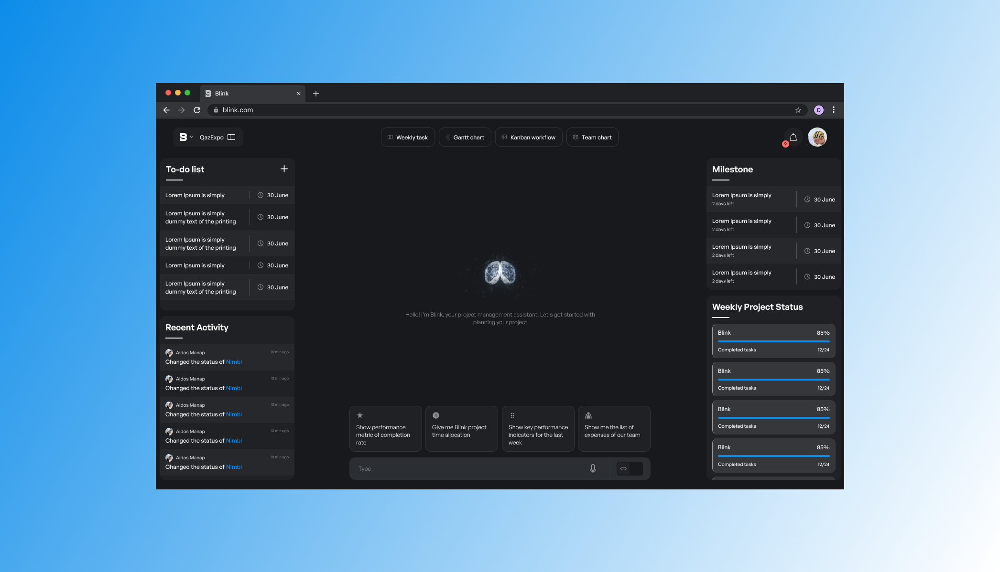
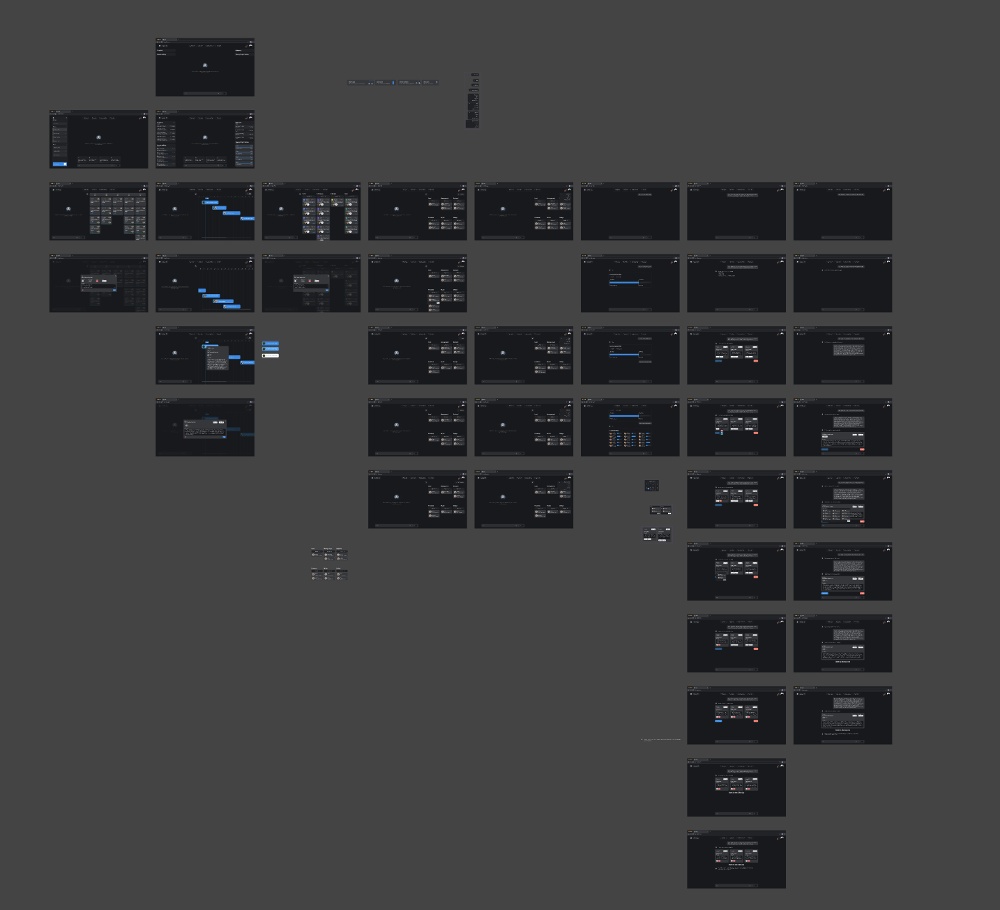
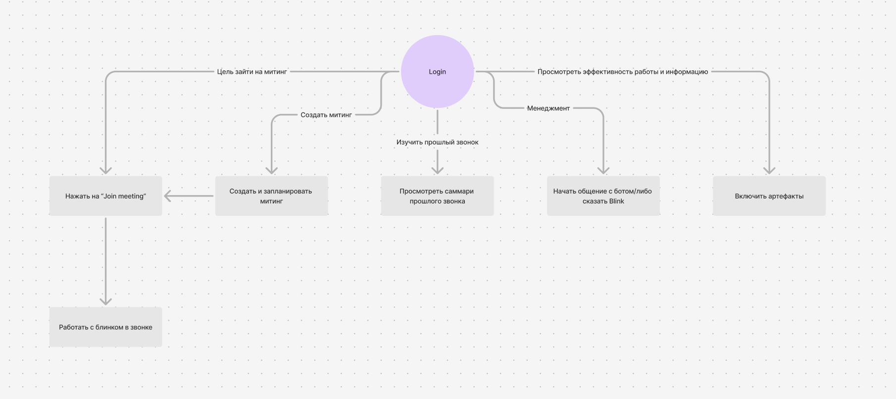
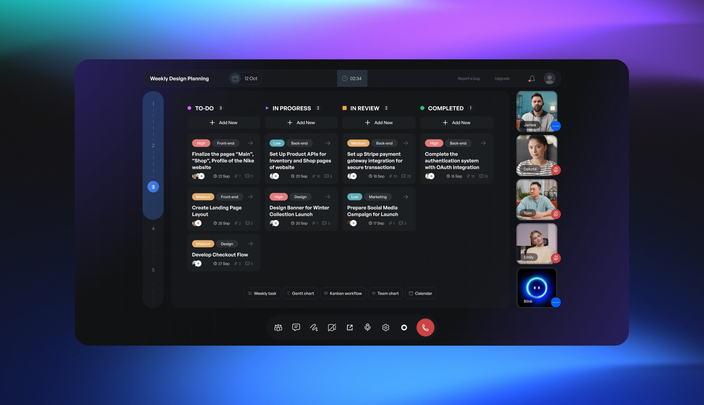

Как всё началось
Идея появилась почти случайно. Мы обсуждали, что неплохо бы сделать себе что-то вроде рации, чтобы быстрее связываться внутри команды. После пары брейнштормов рация выросла в идею побольше: инструмент, который упрощает работу команды внутри компании.
Первое время видение постоянно менялось. В итоге остановились на чём-то среднем между таск-менеджером и ChatGPT, но не хватало фишки, которая бы нас выделила.
Мы долго спорили, как всё должно работать, и сошлись на том, что ИИ должен забирать на себя рутину: то, что делать нужно, но на что уходит куча времени. В первых версиях ИИ заполнял за пользователя описания задач, даты и другие поля.
Конкуренты
Я разобрал две группы продуктов. Первая — инструменты для работы и общения: Notion, ChatGPT, Claude, ClickUp, Miro и Slack. У них я смотрел, как устроены главные страницы и как показываются доски и артефакты. Вторая — сервисы для созвонов: Google Meet, Zoom и Teams. Тут меня интересовало, как устроены сами звонки и управление встречами.

Первые версии и интервью
Чтобы было что показать людям, я быстро собрал первые версии и показал их восьми проектным менеджерам из других компаний. Хотел понять, что им мешает в работе, что не нравится в нашем дизайне и какую рутину они бы с радостью отдали ИИ.

Вот что я от них услышал и что мы с этим сделали:
Вариантов я сделал много, под разные наборы функций. Дольше всех продержалась версия, где в центре чат с Blink, а вокруг самые нужные блоки: список дел, последние действия, вехи и статус проектов за неделю. Сверху переключатель между четырьмя основными досками: задачи на неделю, диаграмма Ганта, канбан и загрузка команды.

На общей встрече решили развивать этот вариант. Разработчики начали собирать продукт, а я занялся тем, как человек будет с ним работать: как выводятся доски, какую информацию показывать и что ему нужно знать в разных ситуациях.
Первая подача в YC
Нашей целью была подача в Y Combinator, чтобы получить финансирование и развивать проект дальше. Поставили сроки, раз в неделю созванивались, чтобы сверяться, куда движемся, и началась активная работа.

Сроки были очень сжатые, и дизайн приходилось дополнять на ходу. За короткое время я сделал четыре основные доски с редактируемыми графиками и таблицами и ещё две для генерации задач. Для демо нужны были рабочие сценарии, я придумал пять штук и по очереди отдавал их на фронт.
А потом мы просто не успели к дедлайну подачи.
Переделали всё
Бросать идею не хотелось, поэтому мы продолжили и перелопатили проект почти полностью: доделали то, на что в первый раз не хватило времени, и сильно поменяли концепт. Blink перестал быть просто таск-менеджером с ИИ. Теперь это рабочее место проектного менеджера: здесь созваниваются с коллегами, ведут задачи, а рутину забирает помощник Blink.
Сначала расписали основные сценарии: зайти на встречу или создать и запланировать новую, посмотреть саммари прошлого звонка, поговорить с ботом или просто сказать «Blink», открыть отчёты по работе команды.

Маскот
Дальше началось самое интересное. Мне хотелось, чтобы у Blink было лицо и чтобы он мог показывать, что ему не всё равно, что происходит в работе. Я перепробовал кучу идей и пришёл к тому, что он должен быть лёгким, милым и дружелюбным. Так появился круглый Blink. Я нарисовал ему около 20 эмоций на разные случаи и анимировал их.
Blink в звонках
Потом Blink надо было встроить в саму платформу. Я переделал дизайн под звонки и встречи: Blink стал полноценным участником созвона, у него своё окошко рядом с коллегами. Прямо во время звонка можно открыть канбан, диаграмму Ганта или календарь и разбирать задачи всей командой.

Главный экран тоже поменялся. Слева встречи на сегодня, справа быстрый старт нового звонка и саммари прошлой встречи, а в центре сам Blink: говоришь «Blink» и начинаешь работу.
Промо-ролик
У меня есть опыт в моушн-дизайне, поэтому мы с CEO сели за сценарий промо-ролика. Времени ушло немало, но в итоге у Blink появилось классное видео, которое показывает идею, концепт и главные фишки.
Работа с командой
Нас было восемь человек, и дизайнером среди них был только я, так что весь визуал, от интерфейса до маскота и ролика, был на мне. Всё это время я был на постоянной связи с нашим фронтендером Алмазом: анимации маскота приходилось много раз поправлять и переводить в JSON, чтобы встроить в платформу. А с ML-разработчиками мы регулярно созванивались, чтобы понимать, что ИИ через API реально умеет, а что нет, и подстраивать под это интерфейс.
Чем всё закончилось
Во второй раз мы всё успели подготовить и подали заявку в Y Combinator. Но в акселератор не прошли, пришёл отказ.
Но на этом история не закончилась: у Blink нашлись партнёры, которые согласились профинансировать проект. Вот анонс в LinkedIn.
Спасибо, что дочитали!